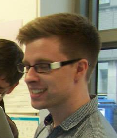
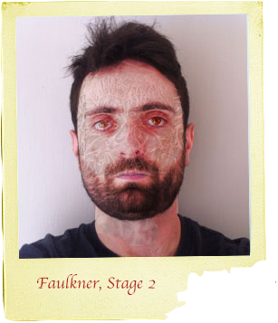

The user discovers pieces of evidence through exploring the campus map. When the user has discovered every piece of evidence in a building new areas can be accessed. Unlocked evidence can be accessed later on the inventory page, where it is arranged chronologically.
TZD is a collaborative final project assembled by a sub-group of the MSc Interactive Digital Media in Trinity College Dublin for the academic year of 2013/14. The aim of the class as a whole was to explore the concept “Reflections of Trinity” through a distinct assortment of digital media. Team TZD focused on examining the idea of “reflections” through a web based interactive narrative. We wanted to incorporate the idea of reflection in terms of looking back upon events past. The history of trinity is well documented so Team TCD decided to focus on a futuristic fictional narrative in which the user explores the Trinity campus and pieces together the story. Through assembling the story the user encounters a rich array of media, created by Team TZD in order to bring the narrative to life. The futuristic user interface and sombre audio landscape immerses the user in the fictional narrative, while evoking a varied range of emotions throughout the journey.
My previous degree was in English and History, which means I can write really pretty essays about things that happened long ago. During this course and in my own time I have developed a solid knowledge of front end coding and design skills with core JS and jQuery. I worked on the inventory page. Visit my personal site at starvinggraduate.com.
Linkedin: link
Graduated from the University of Portsmouth in 2007 with a BSc (2:1) in Computer Animation and now has studied a MSc in Interactive Digital Media at Trinity College, Dublin. Has interests in numerous media outlets including video games and film. Aspiring designer and producer.
email : yates.ryanpatrick@gmail.com
LinkedIn : https://www.linkedin.com/pub/ryan-yates/68/5b7/1aa
Having completed a degree in Business Information Systems at UCC, Fergus spend a number of years working as an IT analyst in the financial services sector in both the US and Ireland. Undertaking a MSc in Interactive Digital Media allowed him pursue his interests in web application development and information design.
Contact: kennyfe@tcd.ie
Having completed a degree in Transport Operations and Technology from D.I.T. I felt needed a change in direction. This MSc in Interactive digital Media seemed appropriate for the career path I was seeking. Throughout the academic year developed a number of skills in web development and audio/video production.
Contact: hardyb@tcd.ie